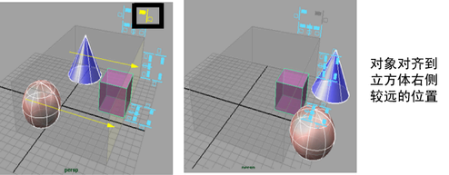

此菜单始终可以从主菜单栏中使用，而与所选的菜单集无关。
变换(Transform)
- 变换工具(Transformation Tools)
- 此子菜单中的选项帮助您设置与场景对象变换相关的操作。
- 选择“修改 > 变换工具”(Modify > Transformation Tools) >（工具类型）>
 ，以设置“变换工具”(Transformation Tools)选项。
，以设置“变换工具”(Transformation Tools)选项。
- 重置变换(Reset Transformation)
- 将选定对象上的变换重新设置回零。这样可以撤销自对象创建或上次“冻结”以来的任何变换。
- 使用这些选项可以控制重置哪些类型的变换（“平移”(Translate)、“旋转”(Rotate)或“缩放”(Scale)）。
- 冻结变换(Freeze Transformations)
- 将选定对象上的当前变换调整为对象的零位置。
提示： 应先执行冻结变换，再执行诸如缝合、对齐、附加、雕刻、线和褶皱等操作；或者在执行冻结前删除历史。
- 选择“修改 > 冻结变换”(Modify > Freeze Transformations) > 可设置“冻结变换选项”(Freeze Transformations Options)。
- 匹配变换(Match Transformations)
- 用于设置任何选定（目标）对象的变换值，以匹配最后一个选定（源）对象的变换值。请参见匹配对象属性值和匹配变换(Match Transformations)。
枢轴(Pivot)
- 使枢轴居中(Center Pivot)
- 将枢轴移动到对象或组件选择的中心（基于其边界框）。
- “使枢轴居中”(Center Pivot)支持形状和组件。例如，如果选定了组件，则枢轴在选定组件的边界框上居中。如果选定了具有子对象的对象，则枢轴在整个层次上居中。如果要使枢轴在层次中的单个形状的几何体上居中，则必须先选择形状节点。请参见使枢轴点居中。
- 置零枢轴(Zero Pivot)
-

- 将枢轴移动到对象的原点。
- 选择“修改 > 置零枢轴”(Modify > Zero Pivot)将为当前选定对象重置枢轴。
提示： 若要设置在多个 Maya 会话中持续保留的“枢轴重置”(Pivot Reset)方法（“使枢轴居中”(Center Pivot)或“置零枢轴”(Zero Pivot)），请执行以下操作之一：
- 双击移动工具(Move Tool)、旋转工具(Rotate Tool)或缩放工具(Scale Tool)以打开“工具设置”(Tool Settings)，并设置“枢轴重置”(Pivot Reset)方法（“使枢轴居中”(Center Pivot)或“置零枢轴”(Zero Pivot)）
- 按“d”进入“编辑枢轴”(Edit Pivot)模式，然后在场景中的任意位置单击鼠标右键以访问枢轴标记菜单，并选择“重置时将位置置零”(Zero Position on Reset)
- 烘焙枢轴(Bake Pivot)
- 将当前工具的自定义轴方向应用于选定对象的变换。例如，可以使用自定义枢轴编辑模式编辑枢轴，然后将已编辑的枢轴烘焙（保存）到选定对象。您可以选择仅烘焙枢轴的“位置”(Position)或“方向”(Orientation)，或者同时烘焙二者。请参见激活自定义枢轴编辑模式。
-
注： 此选项特定于对象选择，不能用于组件选择。
对齐(Align)
- 捕捉对齐对象(Snap Align Objects)
- 此子菜单中的选项帮助将对象捕捉到一起，对齐空间中的对象，以及沿着曲线均匀地重新定位选择的对象。选择“修改 > 捕捉对齐对象”(Modify > Snap Align Objects) >（对齐类型）> ，以设置“捕捉对齐对象”(Snap Align Objects)选项。
- 对齐工具(Align Tool)
- 通过单击表示要对齐的平面和位置的图标，可以直观地对齐对象。
- 选择要对齐的对象。其他对象与最后一个选定（绿色）对象对齐。
- 单击图标以对齐对象。图标显示边界框的对齐方式。例如：

- 使用“编辑 > 撤消”(Edit > Undo)或按 Z 以反转对齐。
在以下示例中，对象将对齐到透明框外部立方体的最右侧。
另请参见对齐对象。
- 单击图标以对齐对象。图标显示边界框的对齐方式。例如：
- 捕捉到一起工具(Snap Together Tool)
- 该选项可用于直观地从两个对象上拾取一些点，以便捕捉到一起。
- 单击一个对象上的一点，然后单击第二个对象上的一点。可以拖动选定点以进行编辑。然后按 Enter 键将点捕捉到一起。另请参见将一个对象捕捉到另一个对象。
- 移动并旋转对象(Move and rotate object(s)) - 工具将点捕捉到一起时会对移动对象进行旋转，这样这些对象就会沿法线捕捉到一起。这有助于防止对象相交。
- 仅移动对象(Move object(s) only) - 工具将点捕捉到一起，但不会对移动对象进行旋转。在捕捉之后，对象会保留其方向不变。
- 捕捉到多边形面(Snap to Polygon Face) - 将捕捉点约束到多边形面的中心。
“捕捉到一起工具”(Snap Together Tool)中的选项包括：
旋转顺序(Rotate Order)
- 对旋转重新排序...(Reorder Rotation...)
- 包含用于更改对象的旋转顺序而不影响动画的设置。如果要在已经设置动画后更改控件的旋转顺序，或者不希望更改对象的姿势，这将非常有用。
- 选择“对旋转重新排序...”(Reorder Rotation...)，然后在视口或大纲视图中选择已设置动画的对象，以使用建议的旋转顺序和万向锁定百分比填充“所需旋转顺序”(Desired rotation order)列表。
- 选择“修改 > 对旋转重新排序...”(Modify > Reorder Rotation...)以设置“对旋转重新排序选项”(Reorder Rotation Options)。
节点(Nodes)
- 节点解算(Evaluate Nodes)
- 使用此子菜单中的项目禁用对各种动画和建模节点解算，可以提高性能。只有再次启用节点解算，才会在视图面板中显示节点的效果。
命名(Naming)
- 添加层次名称前缀(Prefix Hierarchy Names)
- 将前缀添加到选定父对象及其所有子对象的名称中。
- 选择父对象。
- 选择修改 > 添加层次名称前缀(Modify > Prefix Hierarchy Names)。
- 键入前缀，然后单击“确定”(OK)。
- 另请参见更改一个或多个对象的名称。
- 搜索和替换名称(Search and Replace Names)
- 根据“搜索”(Search For)中指定的字符串搜索节点名称，使用“替换为”(Replace With)中指定的字符串替换已命名字符串。
- 可以选择搜索一个层次、选定节点还是所有节点。另请参见更改一个或多个对象的名称。
属性(Attributes)
- 添加属性(Add Attribute)
- 自定义属性是在“添加属性”(Add Attribute)窗口中选择添加和定义的属性。虽然自定义属性是动态添加到对象的，但是将其称为自定义是为了将其与内置的动态属性相区分。
- 自定义属性对 Maya 中对象的任何属性都没有直接影响。这些属性可以用于控制其他属性的组合。自定义属性也可以用作变量 - 用于临时存储值以供其他属性读取。
- 为对象添加了自定义属性后，该属性将显示在“属性编辑器”(Attribute Editor)的“附加属性”(Extra Attributes)中（如果将该属性设置为可设置关键帧，该属性也将显示在“通道盒”(Channel Box)中）。
- 选择“修改 > 添加属性”(Modify > Add Attribute)，以设置“添加属性”(Add Attribute)选项。
- 请参见创建、编辑或删除自定义属性。
- 编辑属性(Edit Attribute)
- 您可以从“修改”(Modify)菜单或“属性编辑器”(Attribute Editor)（属性 > 编辑属性(Attributes > Edit Attributes)）中编辑自定义（或动态）属性。
- 选择“修改 > 编辑属性”(Modify > Edit Attribute)，以设置“编辑属性”(Edit Attribute)选项。
- 请参见创建、编辑或删除自定义属性。
- 删除属性(Delete Attribute)
- 可以从“修改”(Modify)菜单或“属性编辑器”(Attribute Editor)（“属性 > 删除属性”(Attributes > Delete Attributes)）中删除自定义属性。无法删除内置属性。
- 另请参见创建、编辑或删除自定义属性。
对象(Objects)
- 激活(Make Live)
- 激活选定曲面，以便可以将其他对象和工具捕捉到其曲面。激活的曲面可以是多边形网格、NURBS 曲面、GPU 缓存对象或构造平面。“激活”(Make Live)还支持隐藏的曲面。请参见设置激活的曲面和捕捉到激活的曲面。
- 替换对象(Replace Objects)
- 使用指定的源对象替换场景中的一个或多个对象。选择要替换的对象以及要用作源对象的对象。源对象必须是选择中的最后一个对象。
- 选择“修改 > 替换对象”(Modify > Replace Objects)> ，以设置“替换对象”(Replace Objects)选项。
- 转化(Convert)
-
将 NURBS、多边形、曲线、Paint Effects、流体转化为细分曲面、多边形、对象等。有关此子菜单选项的详细信息，请参见“转化”(Convert)子菜单。
绘制工具(Paint Tool)
- 绘制脚本工具(Paint Scripts Tool)
- 允许使用“绘制脚本工具”(Paint Scripts Tool)来绘制 MEL 脚本。
- 有关绘制脚本的详细信息，请参见 MEL 脚本绘制概述和脚本绘制。
- 有关 Artisan 笔刷工具的详细信息，请参见 Artisan 笔刷工具的工作方式。
- 选择“修改 > 绘制脚本工具”(Modify > Paint Scripts Tool) > ，以设置绘制脚本工具选项(Paint Scripts Tool Options)。
- 绘制属性工具(Paint Attributes Tool)
- 用于使用“绘制属性工具”(Paint Attributes Tool)绘制 MEL 脚本。
- 选择“修改 > 绘制属性工具”(Modify > Paint Attributes Tool) > ，以设置“绘制属性工具”(Paint Attributes Tool)选项。
- 有关详细信息，请参见绘制属性。另请参见 Artisan 笔刷工具的工作方式。
资产(Asset)
- 添加到资产(Add to Asset)
- 将选定节点添加到选定资产。如果选定了两个资产，则第一个选定资产将添加到第二个选定资产中。
选择“修改 > 资产 > 添加到资产”(Modify > Assets > Add to Asset) >
以设置添加到资产选项。
- 从资产移除(Remove from Asset)
- 从对应资产中移除任何选定节点。如果节点是嵌套资产系列的一部分，则这些节点将放置到其上一个级别。
除了选定的节点外，还可以移除层次中的其他节点，方法是选择“修改 > 资产 > 从资产移除”(Modify > Asset > Remove from Asset) >
，然后选择“包括层次”(Include Hierarchy)选项。
- 导出代理资产(Export Proxy Asset)
- 为当前选定的被引用资产创建代理文件。有关代理资产的详细信息，请参见代理资产。
选择“修改 > 资产 > 导出代理资产”(Modify > Asset > Export Proxy Asset) >
，以设置导出资产代理选项(Export Asset Proxy Options)。
- 发布属性(Publish Attributes)
- 根据“发布属性选项”(Publish Attribute Options)中的选项，在资产上创建已发布的名称并将属性与这些已发布名称绑定。
选择“修改 > 资产 > 发布属性”(Modify > Asset > Publish Attributes) >
，以设置发布属性选项(Publish Attributes Options)。
- 取消发布属性(Unpublish Attributes)
- 取消绑定在“通道盒”(Channel Box)中选择的任何已发布属性，并删除已发布的名称。
- 发布连接(Publish Connections)
- 发布连接到选定资产外部的节点的所有属性。这同时包括传入和传出连接。
如果一个外部节点的一个属性用作资产内部两个节点的输入，则可以合并这些连接并将其连接到资产的单个已发布属性上。若要执行此操作，请选择“修改 > 资产 > 发布连接”(Modify > Assets > Publish Connections) >
，然后启用“合并公用输入”(Merge common inputs)。
- 锁定未发布的属性(Lock Unpublished Attributes)
- 锁定选定资产中全部节点所有未发布的属性。
- 解除锁定未发布的属性(Unlock Unpublished Attributes)
- 解除锁定选定资产中所有节点的所有未发布属性。
- 发布节点(Publish Node)
- 使用指定的已发布名称将当前选定节点发布到资产。发布着色组时，请使用已发布名称 mainSG 来指示 Maya 用于着色资产的组。
- 取消发布节点(Unpublish Node)
- 从进行封装的资产中取消发布当前选定的节点。对应的已发布名称也将一并删除。
- 指定模板(Assign Template)
- 允许您为当前选定资产指定一个模板。
选择“修改 > 资产 > 指定模板”(Modify > Asset > Assign Template) >
，以设置“指定模板选项”(Assign Template Options)。使用这些选项可以：
- 根据所选模板的绑定集自动绑定属性。启用“自动绑定”(Autobind)。
- 为由模板定义但未在选定资产中找到的属性创建未绑定的已发布名称。启用“创建替代对象属性”(Create Stand-In Attributes)。
- 选择资产内容(Select Asset Contents)
- 选择所有由选定资产封装的节点，包括所有隐藏的节点。
- 高级资产(Advanced Assets)
-
提供用于处理高级资产的选项，如选择和发布节点。有关详细信息，请参见“高级资产”(Advanced Assets)子菜单。